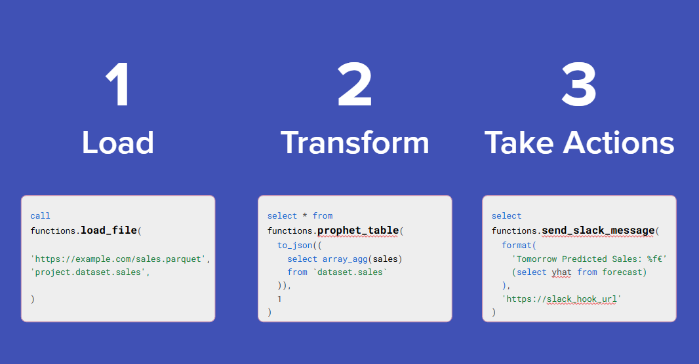

☝️ Call ANY BigFunction without install¶
BigFunctions are open-source BigQuery functions that give you SQL-superpowers in BigQuery 💪.
✅ You can call ANY public BigFunction without install
The functions are deployed in 39 public datasets (one dataset per region) so that you can call them without install.
✅ You can also deploy the public BigFunctions
You can deploy public BigFunctions (or your own) in your GCP project with a single command using BigFunctions framework.
All BigFunctions Public Datasets >
| Region | Dataset |
|---|---|
eu |
bigfunctions.eu |
us |
bigfunctions.us |
europe-west1 |
bigfunctions.europe_west1 |
asia-east1 |
bigfunctions.asia_east1 |
asia-east2 |
bigfunctions.asia_east2 |
asia-northeast1 |
bigfunctions.asia_northeast1 |
asia-northeast2 |
bigfunctions.asia_northeast2 |
asia-northeast3 |
bigfunctions.asia_northeast3 |
asia-south1 |
bigfunctions.asia_south1 |
asia-south2 |
bigfunctions.asia_south2 |
asia-southeast1 |
bigfunctions.asia_southeast1 |
asia-southeast2 |
bigfunctions.asia_southeast2 |
australia-southeast1 |
bigfunctions.australia_southeast1 |
australia-southeast2 |
bigfunctions.australia_southeast2 |
europe-central2 |
bigfunctions.europe_central2 |
europe-north1 |
bigfunctions.europe_north1 |
europe-southwest1 |
bigfunctions.europe_southwest1 |
europe-west2 |
bigfunctions.europe_west2 |
europe-west3 |
bigfunctions.europe_west3 |
europe-west4 |
bigfunctions.europe_west4 |
europe-west6 |
bigfunctions.europe_west6 |
europe-west8 |
bigfunctions.europe_west8 |
europe-west9 |
bigfunctions.europe_west9 |
europe-west12 |
bigfunctions.europe_west12 |
me-central1 |
bigfunctions.me_central1 |
me-west1 |
bigfunctions.me_west1 |
northamerica-northeast1 |
bigfunctions.northamerica_northeast1 |
northamerica-northeast2 |
bigfunctions.northamerica_northeast2 |
southamerica-east1 |
bigfunctions.southamerica_east1 |
southamerica-west1 |
bigfunctions.southamerica_west1 |
us-central1 |
bigfunctions.us_central1 |
us-east1 |
bigfunctions.us_east1 |
us-east4 |
bigfunctions.us_east4 |
us-east5 |
bigfunctions.us_east5 |
us-south1 |
bigfunctions.us_south1 |
us-west1 |
bigfunctions.us_west1 |
us-west2 |
bigfunctions.us_west2 |
us-west3 |
bigfunctions.us_west3 |
us-west4 |
bigfunctions.us_west4 |

🧠 AI¶
ask_ai(prompt, model): Ask Anything!ask_appstore_reviews(prompt, app_url_in_appstore): Ask AI what your app users think.ask_my_data(question, fully_qualified_table): Ask your data anyquestionin natural language.categorize(items): Categorizeitemsin categories and subcategories.classify_text(text, candidate_labels): Classifytextamongcandidate_labelsgenerate_categories(items): Returncategoriesofitems.generate_face_embedding(image_url): Detect Face on image and Generate its Embeddinggenerate_sql(question, fully_qualified_table): Transformquestionto a SQL query.
🔨 Convert Data Format¶
html2pdf(html): Converthtmltopdfjson2excel(data): Dump data to excel filejson2xml(json): Returns XML for given JSON stringxml2json(xml): Returns JSON as a string for given XML string
👀 Explore¶
chart(data, chart_type, ylabel): Return html with a chartjs chartexplore_column(fully_qualified_column): Show column statisticsexplore_dataset(fully_qualified_dataset): Show infos about dataset tablesexplore_table(fully_qualified_table): Show table infos and column statisticslist_dataset_tables(fully_qualified_dataset): List tables offully_qualified_datasetsankey_chart(data): Return html with a Sankey Google chart
🚀 Export¶
export_table_to_datastore(fully_qualified_table, key_column, datastore_path): Exportfully_qualified_tableto datastoreexport_to_datastore(datastore_path, key, data): Exportsdatato Datastoreexport_to_pubsub(project, topic, data, attributes): Exportsdataandattributesto Pub/Subtopic.post(url, data, headers): POSTdatatourl.upload_table_to_gsheet(table_or_view_or_query, max_rows, spreadsheet_url, worksheet_name, write_mode): Upload data fromtable_or_view_or_queryto Google Sheetupload_to_gsheet(data, spreadsheet_url, worksheet_name, write_mode): Uploaddata(a json array of objects) to a Google Sheet
📶 GA4¶
create_ga4_views(ga4_dataset, destination_dataset): Create views to help querying GA4 Data
🛢 Get Data¶
exchange_rate(base, to): Getexchange_ratefaker(what, locale): Generates fake dataget(url, headers): Requesturlget_appstore_reviews(url): GET Apple App Store Reviews of an appget_data_from_apify(actor, input, api_token): Get data using an apifyactor.get_github_data(public_repo, destination_dataset, streams): Get data frompublic_repointodestination_datasetget_json(url, headers): GET jsondatafromurlget_meteo(latitude, longitude, date): Getmeteoget_playstore_reviews(app_id, country, language): GET Google Play Store Reviews of an appget_transport_emissions(distance_km): Get the transport CO2 emissions given thedistance_kmget_webpage_data(prompt, url): Extractdatafromurlusingpromptget_webpage_metadata(url): Get webpage metadataget_webpage_structured_data(url): Get webpage Structured Datalist_public_datasets(): Returns list of BigQuerypublic_datasetsload_api_data(source, source_config, streams, destination_dataset): Load data from 250+ sources using Airbyte Python Connectorsload_duckdb_database(duckdb_file_url, destination_dataset): Download duckdb database intodestination_datasetload_file(url, file_type, destination_table, options): Download web file intodestination_tableload_google_trends(destination_table, keywords, start_month, geo, category, gprop): Load daily Google Trendsload_saas_data(source, source_config, streams, destination_dataset): Load SAAS data from 250+ sources using Airbyte Python Connectors
🌐 Graph¶
connected_components(fully_qualified_table): Compute the connected components of a non-directed graph.
🧠 Machine Learning¶
precision_recall_auc(predictions): Returns the Area Under the Precision Recall Curve (a.k.a. AUC PR)precision_recall_curve(predictions): Returns the Precision-Recall Curveprophet(records, periods, kwargs): Return Time Series Forecast as json using prophetprophet_table(records, periods, kwargs): Return Time Series Forecast as table using prophetroc_auc(predictions): Returns the Area Under the Receiver Operating Characteristic Curve (a.k.a. ROC AUC)roc_curve(predictions): Returns the Receiver Operating Characteristic Curve (a.k.a. ROC Curve)sentiment_score(content): Compute sentiment score ofcontent
💬 Notify¶
send_google_chat_message(message, webhook_url): Sendsmessageto google chat spacesend_mail(to, subject, content, attachment_filename, attachment_content): Sends an emailsend_mail_with_excel(to, subject, content, excel_filename, table_or_view_or_query): Sends an email withtable_or_view_or_querydata attached as excel filesend_mail_with_gmail(gmail_email, gmail_app_password, to, subject, content, attachments): Sends an email using your gmail accountsend_slack_message(message, webhook_url): Sendsmessageto a slack channel.send_sms(message, phone_number): Sendsmessagevia SMS tophone_numbersend_teams_message(message, webhook_url): Sendsmessageto a Microsoft Teams channel.
[...] Transform Array¶
are_arrays_equal(array1, array2): Return true ifarray1=array2array_contains(arr, value): Returnstrueifvalueis in arrayarrelse returnsfalsearray_intersect(array1, array2): Returns the intersection of two arrays.array_union(array1, array2): Returns the union of two arrays.benford_distance(values): Calculate the distance from Benford's Law for givenvalues.distinct_values(arr): Return distinct valuesfind_greater_value(arr, x): Return theoffset(zero-based index) of the firstvalueinarrwherevalue >= xfind_lower_value(arr, x): Return theoffset(zero-based index) of the firstvalueinarrwherevalue <= xfind_value(arr, value): Return the firstoffset(zero-based index) ofvaluein arrayarrfrequent_values(values, frequency_threshold): Returnsfrequent_valuesamong array ofvaluesget_value(key_value_items, search_key): Return the firstvaluewith a keysearch_keyfromkey_value_itemslast_value(arr): Return last value of arraymax_value(arr): Return max value of arraymedian_value(arr): Return median value of arraymin_max_scaler(arr): Performs min-max scaling on an array.min_value(arr): Return min value of arraypercentile_value(arr, percentile): Returns percentile of an array with percentile a float in range [0, 1].rare_values(values, frequency_threshold): Returnsrare_valuesamong array ofvaluesremove_value(arr, value): Return an array with all values exceptvalue.sort_values(arr): Return sorted array (ascending)sort_values_desc(arr): Return sorted array (descending)sum_values(arr): Return the sum of array valuesz_scores(arr): Computez_scores
📆 Transform Date¶
date_sub_isoyear(date, years): Returns same dayyearsbeforegenerate_dates(start_date, end_date): Generate a table of datesgregorian2hijri(gregorian_date): Convert Gregorian Date to Hijri Date (taken from here)is_public_holiday(date, country_code): Return true ifdatecorresponds to a public holiday incountry_codeparse_date(date_string): Parse date with automatic format detectiontranslated_month_name(date, language): Gettranslated_month_nametranslated_weekday_name(date, language): Gettranslated_weekday_name
🌐 Transform Geo Data¶
geocode(address): Getaddressdetails from Google Mapsgeocode_fr(address): Getaddressdetails from api-adresse.data.gouv.frh3(function_name, arguments): Wrapper around Uber H3reverse_geocode(latitude, longitude): Get address details atlatitude,longitudevalidate_address(address): Validateaddressusing Google Maps
{...} Transform Json¶
create_materialized_view_w_flattened_json_column(fully_qualified_table, fully_qualified_materialized_view, json_column): Create a Materialized view of a table withjson_columnflatteneditems2json(key_value_items): Returnsjsonobject from array ofkey_value_itemsjson_column_schema(data): Returns the schema of a json columnjson_items(json_string): Extractkey_value_itemsfromjson_stringjson_keys(json_string): Extractkeysfromjson_stringjson_merge(json_string1, json_string2): Mergejson_string1andjson_string2json_query(json_string, query): Extract data fromjson_stringusing advanced json queryingjson_schema(data): Returns the schema ofdatajson_values(json_string): Extractvaluesfromjson_stringsql_to_flatten_json_column(data, fully_qualified_column): Generate the SQL to flatten a jsoncolumn
1️⃣ Transform Numeric¶
compute_linear_regression_coefficients(x, y): Returns linear regression coefficients fromx,ycolumns.format_percentage(first_number, second_number, nb_decimals): Returnfirst_number / second_numberas a formatted percentagenps(rating): Returns the NPS (Net Promoter Score)quantize_into_bins(value, bin_bounds): Get thebin_rangein which belongsvaluequantize_into_bins_with_labels(value, bin_bounds, labels): Get thelabelof the bin in which belongsvaluequantize_into_fixed_width_bins(value, min_bound, max_bound, nb_bins): Get thebin_rangein which belongsvalueweighted_average(element, weight): Returns the weigthed average elements.
✨ Transform String¶
camel2snake(camelCaseString): Convertstringfrom camelCase to snake_caseconvert_non_ascii_characters_to_unicode_escape_sequences(text): Replace all non ASCII characters with escape unicodedeidentify(text, info_types): Masks sensitive information of typeinfo_typesintextdetect_language(text): Detectstextlanguagedetect_sensitive_info(text): Detect sensitive information intextip2asn(ip): Getasnofipip2continent(ip): Getcontinent_codeofipip2continent_name(ip): Getcontinentofipip2country(ip): Getcountry_codeofipip2country_name(ip): Getcountry_nameofipip_range2ip_networks(first_ip, last_ip): Convert an IP range into a json list of IP networks in CIDR notationis_email_valid(email): Return true ifemailis validis_phone_number_valid(phone_number, options): Return ifphone_numberis validmarkdown2html(markdown): Convertmarkdowntohtmlngram_frequency_similarity(string1, string2, n): Calculates n-gram similarity between two stringsparse_url(url): Returnurlpartsparse_user_agent(user_agent_string): Parses User Agent strings into several componentsphone_number_info(phone_number, options): Getphone_numberinforemove_accents(str): Remove accentsremove_extra_whitespaces(str): Remove unwanted whitespacesremove_strings(string, strings_to_remove): Remove any string ofstrings_to_removefromstringremove_words(string, words_to_remove): Remove any word ofwords_to_removefromstringrender_handlebars_template(template, context): Render template with context using handlebars.js templating libraryrender_template(template, context): Render template with context using nunjucks.js templating libraryreplace_special_characters(string, replacement): Replace most common special characters in astringwithreplacementtranslate(text, target_language): Translatetextintotarget_languageurl_decode(url_encoded_string): Decodeurl_encoded_stringxml_extract(xml, x_path): Returns content extracted from XML from given XPATH
💨 Trigger Event¶
refresh_powerbi(dataset_id, workspace_id, tenant_id, app_id, token_secret, custom_refresh_param): Refresh a Power BI dataset (semantic model)refresh_tableau(workbook_or_datasource_title, site, server, token_name, token_secret): Refresh a tableau datasource or workbook
🔨 Utils¶
deduplicate_rows(query_or_table_or_view): Returns the deduplicated rows ofquery_or_table_or_viewget_latest_partition_timestamp(fully_qualified_table): Return the maximum of the partition column offully_qualified_tableget_table_columns(fully_qualified_table): Get the column information of the given table fromINFORMATION_SCHEMA.COLUMNSget_view_history(fully_qualified_view): Get BigQuery View historylist_scheduled_queries(project): Returnsscheduled_queriesof projectproject.run_python(python_code, requirements, kwargs): Run anypython_code.sleep(seconds): Sleep duringsecondssecondstimestamp_from_unix_date_time(unix_date_time, date_time_part): Interpretsunix_date_timeas the number ofdate_time_partsince1970-01-01 00:00:00 UTC.timestamp_to_unix_date_time(timestamp_expression, date_time_part): Returns the number ofdate_time_partsince1970-01-01 00:00:00 UTC.upsert(query_or_table_or_view, destination_table, insertion_mode, primary_keys, recency_field): Mergesquery_or_table_or_viewinto thedestination_table.